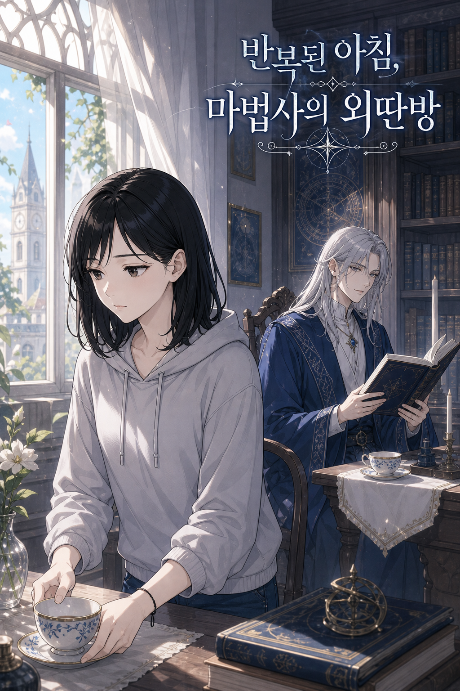
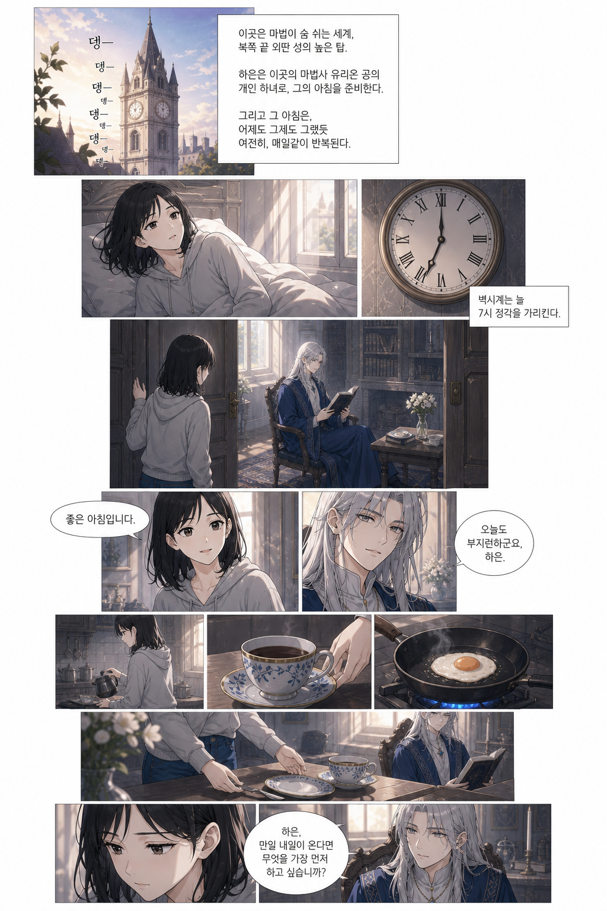
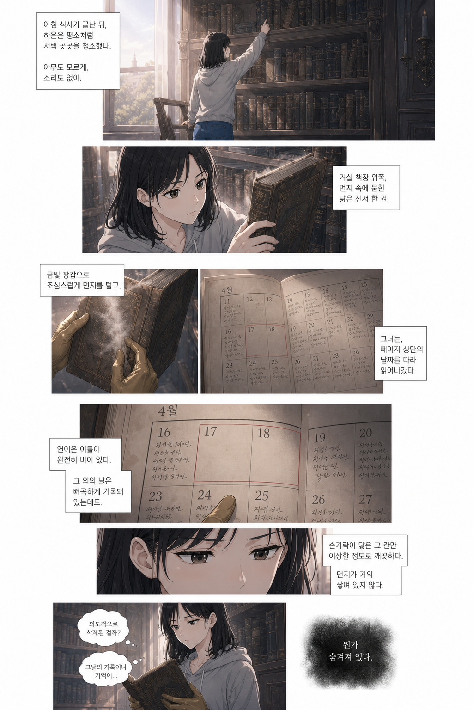
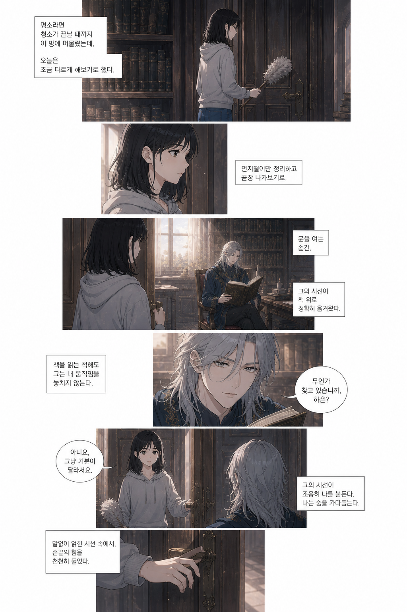
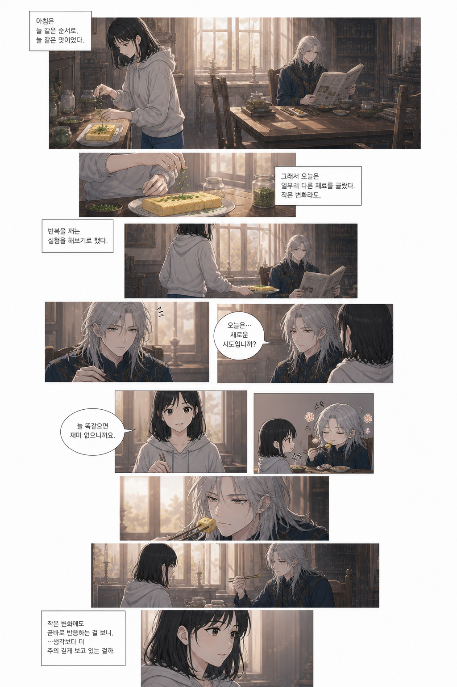
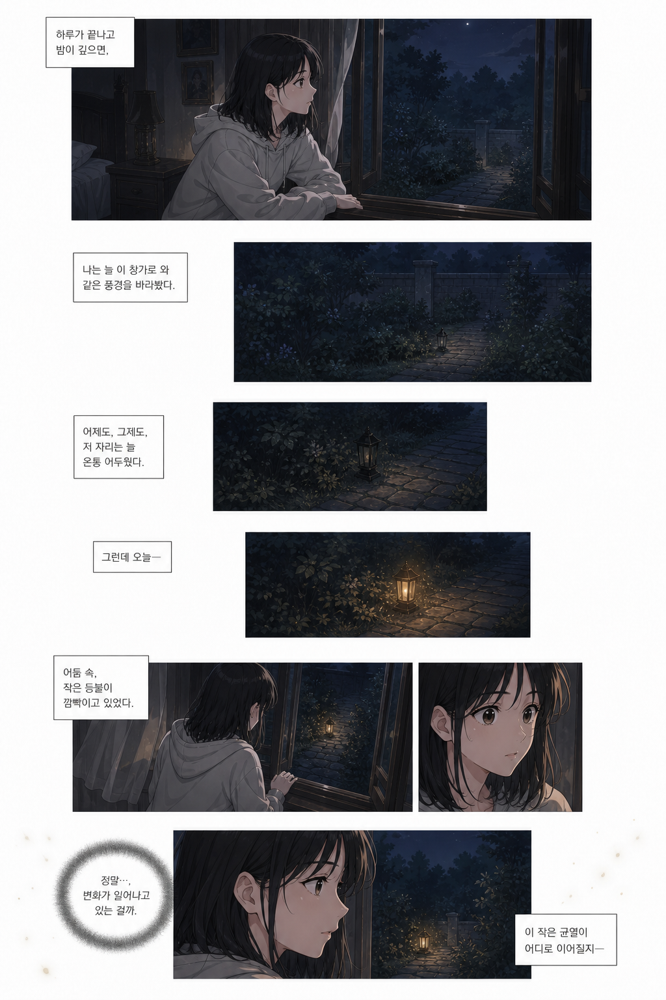

<!doctype html>
<meta charset="utf-8">
<title>반복된 아침, 마법사의 외딴방 — 디테일 직행 실험</title>
<style>
  :root { color-scheme: dark; }
  body {
    margin: 0; background: #14151a; color: #e8e8ea;
    font: 14px/1.6 -apple-system, BlinkMacSystemFont, "Apple SD Gothic Neo", sans-serif;
  }
  header {
    position: sticky; top: 0; z-index: 10;
    background: rgba(20,21,26,.92); backdrop-filter: blur(8px);
    border-bottom: 1px solid #2a2c35; padding: 10px 16px;
    display: flex; gap: 16px; align-items: center; flex-wrap: wrap;
  }
  h1 { font-size: 15px; margin: 0; font-weight: 600; }
  .sub { color: #8b8d98; font-size: 12px; }
  label { color: #b9bbc6; font-size: 12px; display: flex; gap: 6px; align-items: center; }
  main { max-width: 900px; margin: 0 auto; padding: 0 0 80px; }
  figure { margin: 0; }
  img { display: block; width: 100%; height: auto; }
  /* 웹툰처럼 이어 붙여 본다. 끄면 장면 경계가 보인다. */
  body.gap figure { margin-bottom: 28px; }
  body.gap img { border-radius: 4px; }
  figcaption {
    color: #8b8d98; font-size: 12px; padding: 6px 4px;
    display: none;
  }
  body.gap figcaption { display: block; }
  .cover-off #cover { display: none; }
</style>

<header>
  <h1>반복된 아침, 마법사의 외딴방</h1>
  <span class="sub">디테일 직행 실험 · 표지 + 5장면</span>
  <label><input type="checkbox" id="gap"> 장면 사이 띄우기</label>
  <label><input type="checkbox" id="cover" checked> 표지 보기</label>
</header>

<main id="main">
  <figure id="cover"><figcaption>표지</figcaption></figure>
  <figure><figcaption>장면 1 — 반복되는 아침</figcaption></figure>
  <figure><figcaption>장면 2 — 진서의 빈 날짜</figcaption></figure>
  <figure><figcaption>장면 3 — 평소와 다른 행동</figcaption></figure>
  <figure><figcaption>장면 4 — 바뀐 아침 식사</figcaption></figure>
  <figure><figcaption>장면 5 — 창밖의 등불</figcaption></figure>
</main>

<script>
  const body = document.body;
  document.getElementById('gap').addEventListener('change', e => {
    body.classList.toggle('gap', e.target.checked);
  });
  document.getElementById('cover').addEventListener('change', e => {
    body.classList.toggle('cover-off', !e.target.checked);
  });
</script>
